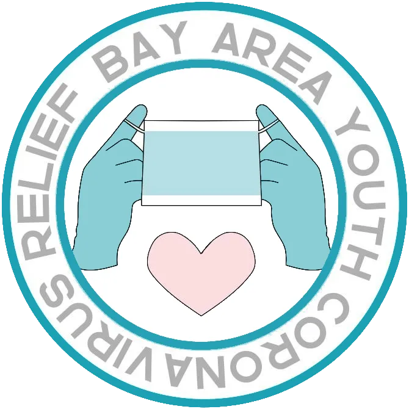

Bay Area Youth Coronavirus Relief Organization
We are a coalition of students from schools from all around the Bay Area working to collect
donated supplies to help people both on the front lines and those in dire need.
April 26th to May 3rd UpdateGunn High School drive cancellation, expansion, and more.
Learn MoreDonateBaycro collects donations in multiple ways and provides methods to communicate with donors to make
donation as simple as possible. Check out our donation page to learn more.
In addition, we also accept monetary donations on our
Gofundme
page.
Donate3D PrintingWe now collect 3D printed parts to donate. If you are interested in 3D printing for us, please check out
printing page so you are aware of the requirements and donation procedure.
Learn MoreJoin UsBaycro is a student-led organization, with people in each school conducting their own donation drives to
collect as many supplies as possible. Anyone is welcome to join under the goal of helping others during
these difficult times.
Join UsSponsorsA big thank you to our current sponsors:
If you would like to sponsor us, please check out our sponsor page to get in touch with us.
Learn More